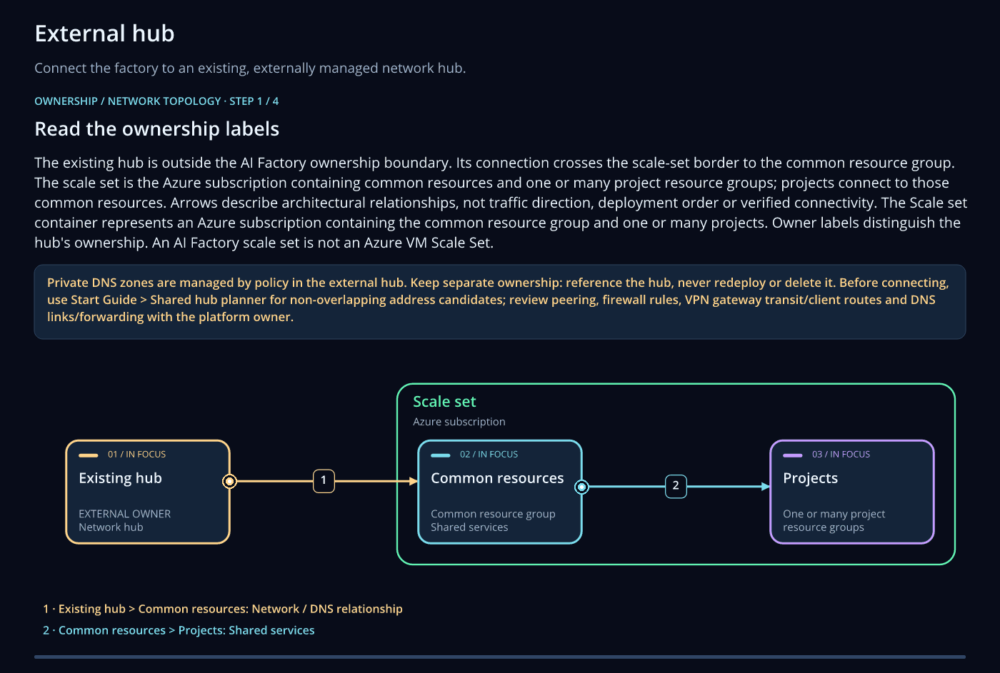
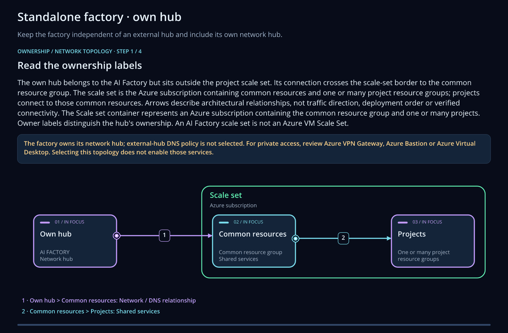
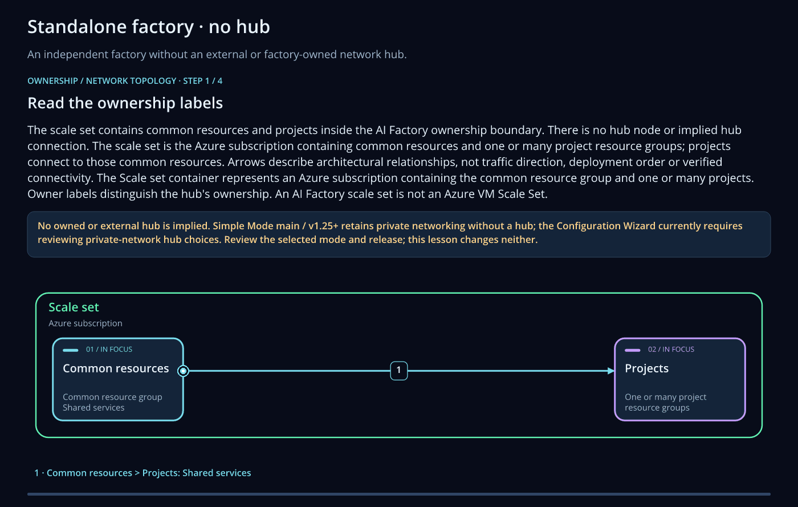

Architecture¶
An AI Factory has a common part and one resource group for each project. Every project starts from the same template, and the team switches on the Azure services it needs. You choose one of three hub modes when you create the Factory.
Each image shows the Factory with one hub mode, and how it connects to Microsoft 365, Microsoft Power Platform, SharePoint, Microsoft Fabric and the AI gateway. A numbered blue circle is a code template for that part: select the circle, or find the number in the table below.
The Factory connects to a hub that you already own, with VNet peering. Your hub gives the VPN or ExpressRoute connection, the firewall and the private DNS zones. Choose it when you have a landing zone, or when several Factories share one hub.


The Factory creates its own hub in its Dev network, with a VPN gateway, a DNS Private Resolver and Bastion. Choose it when you need private access and have no central hub.


The Factory has no hub. It keeps its network and its private DNS zones in the common resource group, and people reach the services over the internet from the IP addresses you allow. Choose it to evaluate ESAF or to run a workshop. Networking is hybrid or public.


The numbers on the images¶
The numbers mean the same on all three images. Each row links to the template in the code templates library and to its folder.
| No. | Code template | What you build with it | Where on the image | Code |
|---|---|---|---|---|
| 1 | ESAF agent with a private web chat, ready for Teams | A Foundry prompt agent grounded in Azure AI Search, with a private web chat. Publish it to Teams and Microsoft 365 Copilot with enableBotService and botFoundryAgentName. | Microsoft 365, through Bot Service to the agent | 40-agent-factory/40-aifactory-agent |
| 2 | Live voice for the ESAF agent | A pipeline step that deploys the private chat app with Azure Voice Live, so that people talk to the agent and hear it answer. | Voice Live in the Foundry project | 40-agent-factory/47-aifactory-agent-live-voice |
| 3 | Voice sales assistant on Fabric data | A sales assistant in the browser: a Foundry prompt agent answers from a Fabric data agent over MCP, with optional live voice. | Microsoft Fabric, into the Foundry tools | 40-agent-factory/40-foundry-voice-sales--from-fabric |
| 4 | Retail agents on Foundry IQ and Fabric IQ | A supervisor routes retail questions to three prompt agents, grounded in a Foundry IQ knowledge base and a Fabric data agent. | Fabric IQ beside Foundry IQ | 40-agent-factory/42-multi-agent-fabric-iq |
| 5 | RAG that keeps each reader's permissions | RAG over several indexes that trims answers with the ADLS Gen2 access control lists, with an optional SharePoint sync and exact totals from a calculator tool. | SharePoint, into Foundry IQ | 40-agent-factory/48-rag-with-splitted-tables-acl-adlsgen2 |
| 6 | Private Azure MCP server for your agents | A private, read-only Azure MCP server on Container Apps, so that Foundry agents can list the real resources of the project. | Foundry tools: MCP | 40-agent-factory/44-azure-mcp |
| 7 | Factory MCP server on the AI gateway | A pipeline step that hosts the read-only Factory MCP server on Container Apps and registers it on the AI gateway in API Management. | AI gateway: API Management or Kong | 40-agent-factory/45-aifactory-mcp-gateway |
| 8 | Agent that trains and scores ML models | A Foundry agent that creates, trains, retrains and batch-scores Azure Machine Learning models for churn prediction. | From the Foundry agent to Azure Machine Learning | 40-agent-factory/49-agent-training-ml-churn-prediction |
| 9 | Single agent: prompt agent or hosted agent | A helpdesk agent that answers from Foundry IQ. Choose a prompt agent, or a hosted agent in one of six frameworks. | Prompt agents in the Foundry project | 40-agent-factory/41-single-agent |
| 10 | Multi-agent helpdesk: retrieve, review, answer | A hosted coordinator asks a knowledge agent for evidence, passes it to a reviewer agent and writes one reviewed answer. | Hosted agents in the Foundry project | 40-agent-factory/42-multi-agent |
| 11 | RAG from the shared data lake or project storage | Text RAG over a pinned corpus in the common data lake or in project storage, with one agent, index and knowledge base for each source. | Azure AI Search | 40-agent-factory/45-rag-agent |
| 12 | Prepare a helpdesk corpus for RAG | Prepares a public helpdesk dataset for private Foundry IQ retrieval, and keeps the evaluation answers apart from the searchable knowledge. | Data Factory and Storage | 40-agent-factory/43-data |
| 13 | ESAF Agent Chat: the agent behind it | The pipeline step that creates or updates the Agent Chat prompt agent in the project when enableFactoryChatAgent is true. | Container Apps: the Agent Chat app | 40-agent-factory/46-factory-chat-agent |
| 14 | ML Model Factory | Machine-learning examples for batch, online and streaming inference with Azure Machine Learning, AutoML and Databricks, driven by one scenario file. | Azure Machine Learning and Databricks | 50-ml-model-factory |
| 15 | Factory lifecycle as an Azure Function | An Azure Function that runs the six ESAF scenarios, from creating a Factory to deleting it, so that a portal or a ticket system can order projects. | Azure Functions | 10-azure-function/12_func_aifactory_lifecycle |
| 16 | Azure Function that reads from storage | An HTTP-triggered Azure Function that lists and reads blobs with its managed identity, with a health endpoint. | Storage of the project | 10-azure-function/11_func_read_from_storage |
| 17 | Starter: prompt agent with RAG in one file | One script that indexes a sample document in Azure AI Search and answers questions with a Foundry prompt agent on the Responses API. | Models and Azure AI Search | 20-agent-foundry/agent_04_prompt_rag_responses_api.py |
| 18 | Starter: prompt agent with a Fabric data agent | One script in which a Foundry prompt agent answers questions through a Microsoft Fabric data agent tool. | Microsoft Fabric data agent | 20-agent-foundry/agent_05_fabric_data_agent.py |
How each connection works¶
| Connection | How it works | Settings and templates |
|---|---|---|
| Microsoft 365: Teams and Microsoft 365 Copilot | You publish an agent of the Foundry project. Azure Bot Service passes each message from Teams or Copilot to that agent. | enableBotService, botFoundryAgentName, botFoundryProjectResourceId. Template 1. |
| Microsoft Power Platform: Copilot Studio and Power Automate | The common virtual network has a subnet that is delegated to Power Platform (common_pbi_subnet_name). You connect your Power Platform environment to that subnet. Agents and flows then call the Factory over the private network. |
common_pbi_subnet_name, common_pbi_subnet_cidr. No code template yet. |
| SharePoint | SharePoint is a knowledge source outside the Factory. Foundry IQ connects to it, and your agents answer from it. | Template 5 keeps each reader's permissions and has an optional SharePoint sync. |
| AI gateway: API Management, or Kong | One endpoint in front of a pool of model deployments, with retries when a backend is throttled. Kong is the alternative when your organization runs Kong. The gateway has its own pipeline. | ENABLE_APIM or ENABLE_KONG, and the apimGateway... and kongGateway... settings. Template 7. See AI gateways. |
| Microsoft Fabric | A Fabric data agent answers questions about your Fabric data. A Foundry agent calls it as a tool. | Templates 3, 4 and 18. |
| Azure Machine Learning | A Foundry agent trains, retrains and scores models in the workspace of the project. | enableAzureMachineLearning. Templates 8 and 14. |
Every setting is explained in Every variable in variables.json, and the Azure resource library lists the services by category.
Watch the hub options¶
The configuration wizard has an animation for each hub mode. The tabs follow your choice above. If your device asks for reduced motion, you get a still image.






